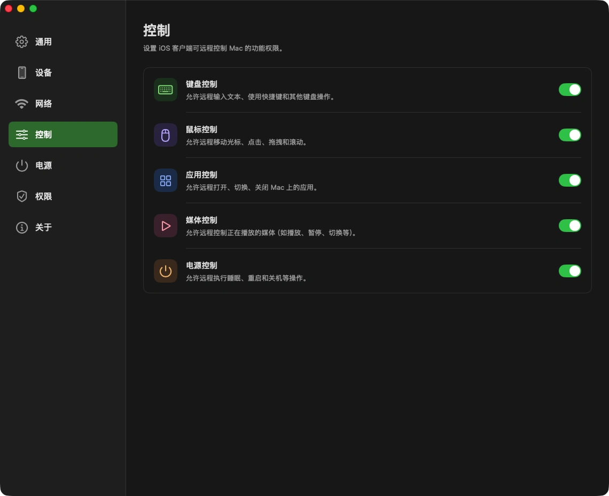
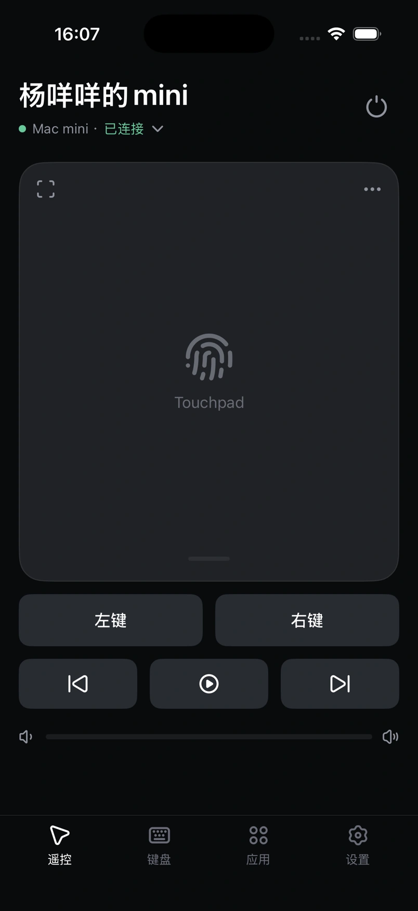
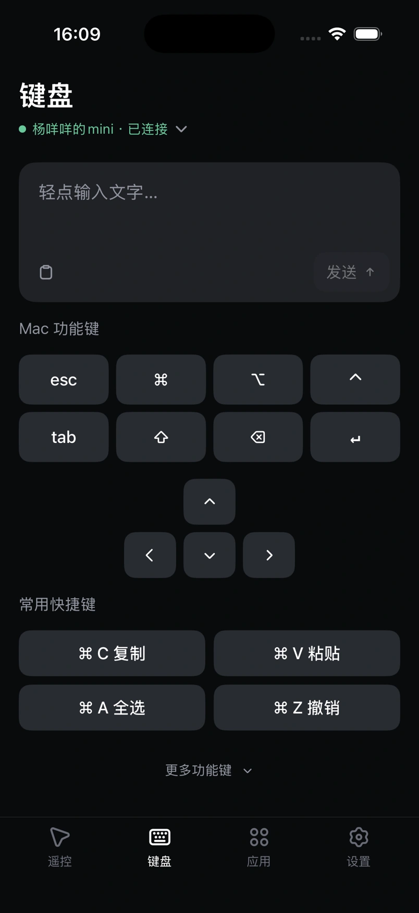

像触控板一样顺手。
单指移动与轻点、双指滚动、长按拖拽。熟悉的手势，换个舒服的位置继续用。
为 iPhone 与 Mac 而作
坐得舒服一点。移动光标、输入文字、切换音乐，
不用再起身找键盘。
macOS 13+ · Apple Silicon 与 Intel · iPhone 需 iOS 17+


单指轻移，光标随之移动。

不用找键盘
熟悉的输入法、系统听写，还有 Mac 常用功能键。
选好文字再发送，或者切换到实时输入。
少一点来回，多一点自在
Mac 接上电视，iPhone 就是遥控器。
从选一部电影，到回一段文字，自然接着做。
单指移动与轻点、双指滚动、长按拖拽。熟悉的手势，换个舒服的位置继续用。
在 iPhone 上打字或听写，再发送到 Mac。支持编辑后发送，也支持实时输入。
暂停、继续、切换曲目、调节音量。精彩的时候，不必离开沙发。
浏览 Mac 应用，收藏常用应用和网站。让下一次打开更直接。
在你的局域网里
iPhone 和 Mac 接入同一个网络，扫码或输入配对码，
在 Mac 确认后连接。通信使用 TLS 加密，
也能随时撤销某台设备的授权。
从这里开始
下载并打开 DMG，将 App 拖入 Applications。启动后，按提示开启辅助功能权限。
目前提供源码安装方式。使用 Xcode 将 iOS 客户端安装到自己的 iPhone，并允许访问局域网。
查看项目说明 ↗两端连接同一局域网。在 Mac 菜单栏选择「配对新设备」，用 iPhone 扫码，最后在 Mac 确认。
Mac Remote
从一个下载，开始舒服一点的遥控体验。
下载 Mac 端macOS 13+ · Apple Silicon 与 Intel
更新日志与其他下载 ↗当前 Mac 安装包使用开发证书签名，尚未经过 Apple 公证。iPhone 端暂未提供 App Store 或 TestFlight 下载；目前需使用 Xcode 从源码安装。
当前版本用于同一局域网内遥控 Mac。请让 iPhone 与 Mac 接入同一个网络。
鼠标与键盘控制需要 macOS 的辅助功能授权。安装后从固定的 Applications 副本启动，按应用提示前往系统设置授权。
Mac 端支持 macOS 13 及以上，安装包兼容 Apple Silicon 与 Intel；iPhone 端要求 iOS 17 及以上。